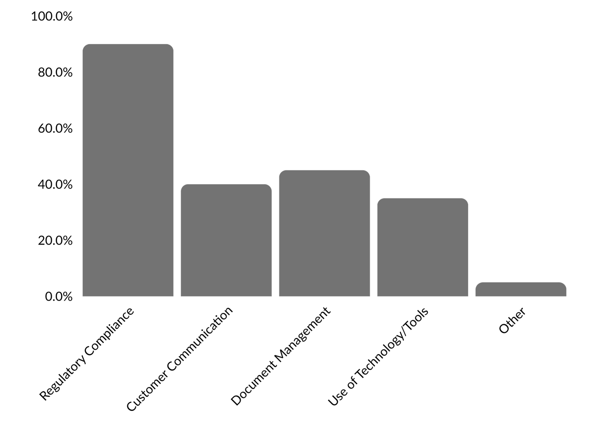
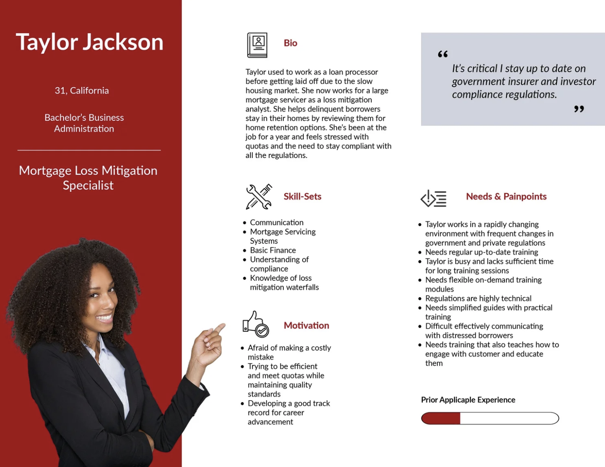
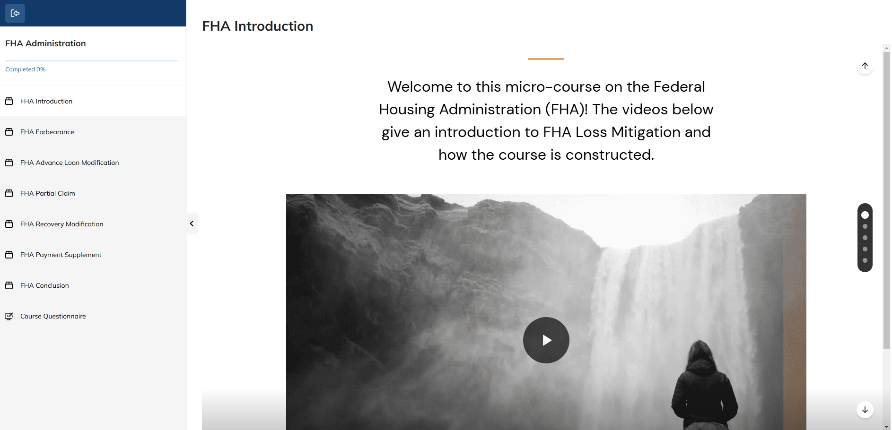
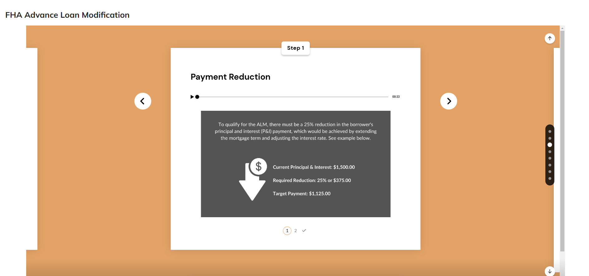
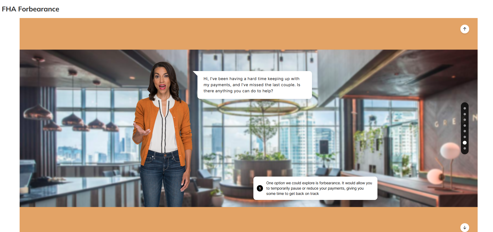

What is the Frequency of Training?
What areas need more training?

FHA is a government mortgage insurer that has been around since the Great Depression. This course breaks down for mortgage servicers the latest regulatory guidelines for reviewing delinquent borrowers for alternatives to foreclosure.
Explore the course by clicking on the different stages of learning design below or click the link below for the full report. For a quick purview of the course, click the prototype button below.
Full Research ReportIn the empathize phase of the learning design process, I aim to understand the specific needs, experiences, and challenges faced by mortgage loss mitigation specialists. This is achieved through a review of literature, personal experience, and targeted surveys, with the ultimate goal of developing a solution that is centered around the learners.
Frequent quality training is crucial for mortgage loss mitigation, a specialized field within mortgage servicing that addresses borrowers who have defaulted on their loans. The report explores several key reasons why consistent and effective training is essential in this sector of the industry.

Establishes the early strategy: key challenges, success criteria, and research insights that guide the design.
Outlines learner challenges, what success looks like, and the metrics that indicate progress (e.g., faster onboarding, smoother workflows, positive feedback, higher LMS traffic, fewer costly errors).
Synthesizes research into an archetypal learner to keep the design process centered on real learner needs rather than assumptions.

The ideation phase generates solution ideas, develops learning strategies, and produces early wireframes and storyboards. Brainstorming—whether in groups or through individual “brain dumps”—supports divergent thinking. Microlearning emerged as the strongest solution: short, focused lessons aligned to job needs and easily integrated into work schedules.
Research shows major barriers to training include lack of time, poor retention, irrelevant or outdated content, and low engagement. Learners increasingly prefer shorter, job‑relevant, up‑to‑date, self‑paced training. Microlearning addresses these needs and is widely adopted, improving engagement, retention, and real‑world skill application.
Creates the first workable version of the course—ranging from wireframes to a full build—based on prior research, the selected solution, and planned learning strategies. This draft is tested and refined until it meets the learning goals and addresses the core learner challenge.
The LMS hosts the course and gives learners access to content, progress tracking, required/completed courses, and training insights. For this project, TalentLMS was used as the delivery platform.

The course creation tool is the software used to develop the course content, which is later hosted in the LMS. For this project, Articulate Rise was chosen as the creation tool due to its strong support for micro-learning, including dedicated templates designed for this purpose. Lessons consist of brief individual slides to help break up content with fluid navigation (see screenshot examples below).


A small group of users tests the e‑learning module. A research plan defines what data will be collected to evaluate impact. Findings guide refinements to both the course and the methodology.
Early feedback highlighted strengths in clarity and pacing, while also identifying opportunities to improve realism and on‑the‑job transfer. These insights shaped the next design cycle.